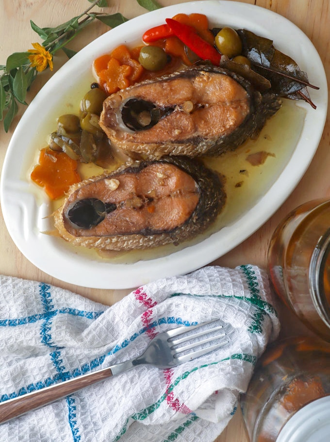

Homemade Spanish-style Sardines

Homemade Spanish-style sardines
Spanish-style Bangus might be the next dish you would want to try to cook for your family and friends!
Milkfish (bangus) is one of the fishes that are very adundant in the Philippines.
Ingredients:
- Milk fish (bangus)
- Carrots
- Pickles
- Garlic
- Bay leaves
- Olives
- Pepper corn
- Olive Oil
- Water
Procedure:
- Using a slow cooker, arrange the bay leaves,carrots, pickles, and garlic.
- Add the fish, olives, peppercorn, and salt.
- Pour the olive oil and water.
Make sure there's enough water to fully submerge the fish.
- Cook in low hear for about 4 hours.
- Serve it hot with rice. Happy eating!
Return to Homepage